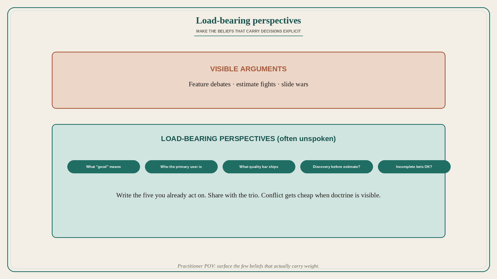

Write down your load-bearing perspectives — do not leave them implicit
Source: Nan Yu (@thenanyu)
original post
What it claims
Nan Yu generally writes about product and technology from a practitioner’s point of view, and opens a thread of some of his most load-bearing perspectives. The thread body is not in note_tweet, so those points are not invented here. The claim present in the hook: a practitioner should surface the few perspectives that actually carry their decisions — load-bearing beliefs — explicitly, rather than leaving them buried in habit. (API returned only the hook text; the rest of the thread was not in note_tweet. Detailed steps are not invented here.)
Why it matters for a PO
Teams argue features while the real disagreement is unspoken load-bearing beliefs (what “good” means, who the user is, what quality bar ships). A PO who writes those perspectives down makes conflict cheap and onboarding faster. Implicit doctrine is how trains talk past each other for a year.
3 takeaways
- Practitioners should name their load-bearing perspectives on product and tech.
- Write from lived practice, not abstract theory — but make the beliefs explicit.
- Without that list, the team debates symptoms while doctrine stays invisible.
Practice this week
Write five load-bearing perspectives you already act on (e.g. “we ship incomplete bets,” “discovery before estimate”). Share with the trio. Mark one the next conflict will actually test. Do not invent a manifesto of ideas you do not already use.